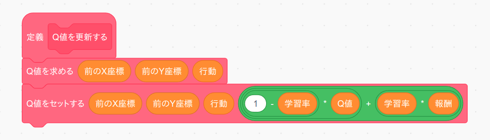
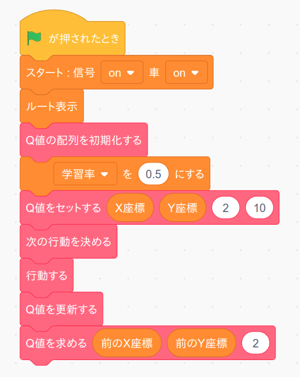
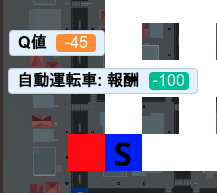

これでQ値に従って車の行動を選択できるようになりました。ただし現時点ではQ値は自分でセットしない限り全て 0 のままですので、実際に車を行動させ、行動後に得られる報酬を使ってQ値を更新する必要があります。
まず「学習率」という変数を作成します。
次に「Q値を更新する」ブロックをブロック定義から作ります。このブロックは繰り返し実行されますので「画面を再描画せずに実行する」は必ずチェックして下さい。
ところで Q 値を更新するタイミングは「車が実際に行動して報酬を得た後」ですので、更新対象の Q 値の座標は「行動後の座標」ではなく、「行動前の座標」になります。よって最初の「Q値を求める」ブロックで行動前の座標におけるQ値を求めてから次の「Q値をセットする」ブロックでその座標に対する Q 値を更新しています。なお更新式は次のようになります。
更新後のQ値 = (1-学習率) * 更新前のQ値 + 学習率 * 報酬
変数「学習率」はどの位の学習効率でQ値を更新するかを決めるパラメータで 0 から 1 までの値を取ります。式を見ると分かるように学習率を 0 にすると全く Q 値を更新しなくなり、逆に 1 にすると更新後の Q 値は報酬の値そのものになります。
あとで実際に試してもらいますが、実は学習率を 0 や 1 にすると学習がうまく行きません。そこで普通は学習率は 0.1 〜 0.5 くらいの値にします。すると更新後のQ値はトライ＆エラーを繰り返しながら少しずつ最適な値に向かって更新されていくようになります。
ではこのブロックのテストをしましょう。まず「緑の旗」を押した時に実行するテストプログラムを次の様に変更します。 プログラムを作りましたら「緑の旗」ボタンを押してください。
ではプログラムの中身について説明します。 まず学習率を 0.5 にセットし、車のスタート座標の左方向(行動=2)の Q 値を 10 にします。すると「次の行動を決める」と「行動する」で車は左に移動しますが、そこは道の上ではありませんので報酬は -100 となります。よって
更新後のQ値 = (1-0.5) * 10 + 0.5 * (-100) = 5 - 50 = -45
と Q 値が更新されます。実際に変数「Q値」の値を表示させてみて-45になっていればテスト成功です。
うまく動きましたら「学習率」の数値や「Q値をセットする」のX座標、Y座標、行動の数値を色々変えるとどの様にQ値が更新されるのか試して下さい。 確認が終わったら変数「Q値」は非表示に戻しておいて下さい。
チャレンジ
今回使った Q 値の更新式は簡略化したバージョンで、本来の Q 学習の更新式はもっと複雑になります。本来の更新式をネットなどで調べてプログラムしてみましょう。